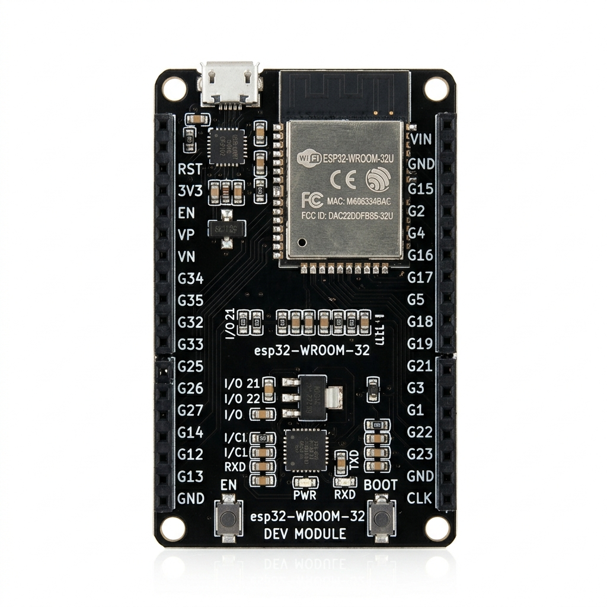
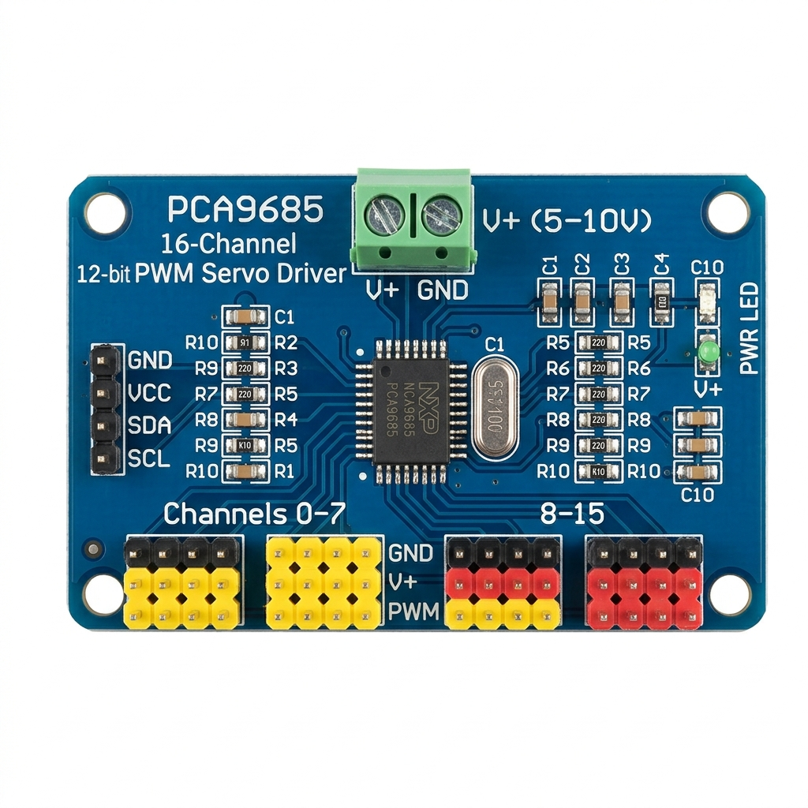
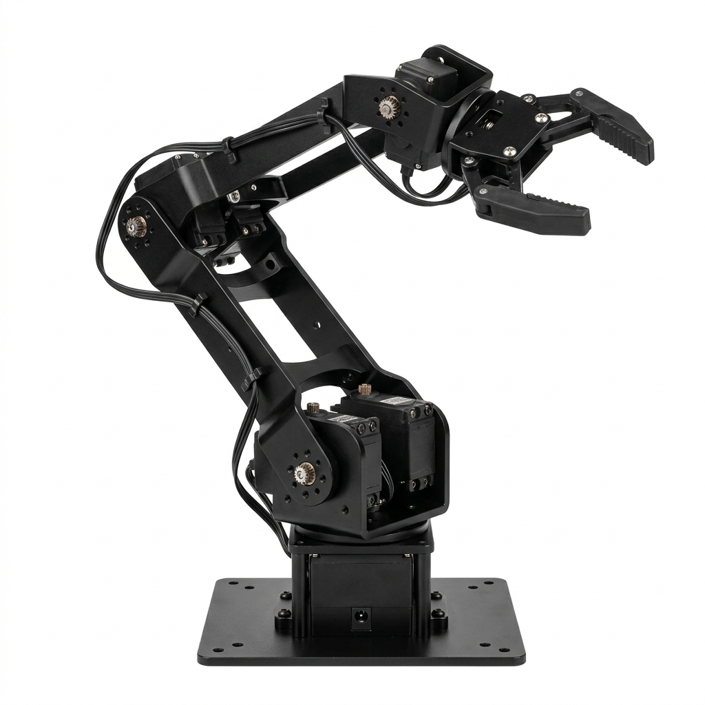
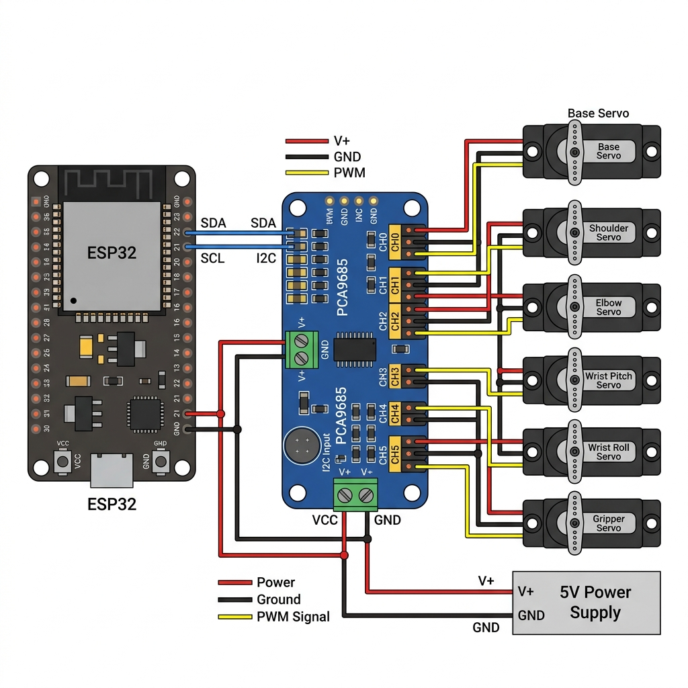

Điều Khiển Cánh Tay Robot 6-DOF
Tài liệu hướng dẫn chuyên sâu về lập trình, đi dây và tối ưu hóa chuyển động cho cánh tay robot 6 bậc tự do sử dụng mạch ESP32 và chip băm xung PCA9685.
Kiến thức nền tảng
Những khái niệm cốt lõi cần nắm trước khi bắt đầu
DOF — Bậc tự do
Degree of Freedom (DOF) là số trục mà robot có thể di chuyển độc lập. Robot 6-DOF có 6 khớp xoay, cho phép đầu kẹp tiếp cận vật thể từ hầu hết mọi hướng trong không gian 3D. Mỗi DOF tương ứng với 1 động cơ servo.
PWM — Điều chế độ rộng xung
Pulse Width Modulation là kỹ thuật điều khiển bằng cách thay đổi độ rộng xung trong chu kỳ cố định. Servo RC tiêu chuẩn hoạt động ở 50Hz (chu kỳ 20ms), trong đó xung 1ms = 0°, xung 1.5ms = 90°, xung 2ms = 180°.
I²C — Giao thức truyền thông
Inter-Integrated Circuit là bus nối tiếp 2 dây (SDA + SCL) cho phép 1 master (ESP32) giao tiếp với nhiều slave (PCA9685). Mỗi thiết bị có địa chỉ duy nhất (PCA9685 mặc định: 0x40). Tốc độ chuẩn: 100kHz–400kHz.
Servo RC — Động cơ vị trí
Servo RC là động cơ tích hợp mạch phản hồi vị trí, cho phép quay chính xác đến góc mong muốn (0°–180°). Mỗi servo có 3 dây: ● Đỏ (V+), ● Nâu/Đen (GND), ● Vàng/Cam (Tín hiệu PWM).
12-bit Resolution — Độ phân giải
PCA9685 sử dụng bộ đếm 12-bit (0–4095 tick) cho mỗi chu kỳ PWM. Với servo 180°, mỗi tick ≈ 0.044°, cho phép điều khiển cực kỳ mịn so với PWM thông thường 8-bit (256 bước = 0.7°/bước).
Smooth Movement — Chuyển động mượt
Thay vì nhảy đột ngột từ góc A sang góc B (gây shock cơ khí), thuật toán chia thành nhiều bước nhỏ 1° với delay giữa mỗi bước. Điều này bảo vệ bánh răng servo và tạo chuyển động tự nhiên hơn.
Phân tích Phần cứng
Các thành phần cốt lõi của hệ thống robot

ESP32
Vi xử lý trung tâm, logic 3.3V, tích hợp Wifi/BT. Cấp lệnh điều khiển qua giao tiếp I2C.

PCA9685
IC chuyên dụng băm xung PWM 12-bit, điều khiển mượt mà 16 kênh Servo đồng thời.

6 Động cơ Servo
6 Servo tiêu chuẩn tạo nên 6 khớp: Đế, Vai, Khuỷu, Cổ tay gập, Cổ tay xoay, Kẹp.
| Kênh PCA9685 | Tên khớp | Mô tả chuyển động | Phạm vi góc |
|---|---|---|---|
0 | Đế (Base) | Xoay toàn bộ cánh tay | 0° – 180° |
1 | Vai (Shoulder) | Nâng/hạ cánh tay | 15° – 165° |
2 | Khuỷu (Elbow) | Gập/duỗi cánh tay | 0° – 180° |
3 | Cổ tay gập (Wrist Pitch) | Nghiêng đầu kẹp | 0° – 180° |
4 | Cổ tay xoay (Wrist Roll) | Xoay đầu kẹp | 0° – 180° |
5 | Kẹp (Gripper) | Mở/đóng kẹp | 30° – 150° |
Sơ đồ kết nối Robot ↔ PCA9685
Cách nối 6 servo của cánh tay robot vào board PCA9685

| Kênh PCA | Khớp Robot | Dây Vàng (Signal) | Dây Đỏ (V+) | Dây Nâu (GND) |
|---|---|---|---|---|
CH0 | Đế (Base) | Hàng PWM — chân 0 | Hàng V+ (nguồn ngoài) | Hàng GND |
CH1 | Vai (Shoulder) | Hàng PWM — chân 1 | Hàng V+ | Hàng GND |
CH2 | Khuỷu (Elbow) | Hàng PWM — chân 2 | Hàng V+ | Hàng GND |
CH3 | Cổ tay gập | Hàng PWM — chân 3 | Hàng V+ | Hàng GND |
CH4 | Cổ tay xoay | Hàng PWM — chân 4 | Hàng V+ | Hàng GND |
CH5 | Kẹp (Gripper) | Hàng PWM — chân 5 | Hàng V+ | Hàng GND |
Mỗi kênh servo trên PCA9685 có 3 chân xếp thành 1 cột: PWM (tín hiệu), V+ (nguồn), GND (mass). Cắm đầu cáp servo đúng chiều — dây nâu/đen quay về phía GND (mép board ngoài).
Cảnh báo Nguồn điện
Thông tin an toàn quan trọng – BẮT BUỘC đọc
KHÔNG sử dụng nguồn 5V từ ESP32 cho Servo
Tuyệt đối KHÔNG sử dụng nguồn 5V từ chân ESP32 để nuôi trực tiếp Servo. Dòng tải quá lớn (mỗi servo có thể kéo 500mA–2A) sẽ làm mạch bị cháy hoặc reset liên tục.
Giải pháp đúng
Cấp nguồn DC 5V ngoài (nguồn tổ ong hoặc adapter công suất 5A–10A) trực tiếp vào Domino màu xanh lá (V+ và GND) trên mạch PCA9685.
Sơ đồ Đấu dây (I2C)
Kết nối giao tiếp giữa ESP32 và PCA9685
SCL
GPIO 22
SDA
GPIO 21
VCC
3V3
GND
GND
Địa chỉ I2C mặc định của PCA9685 là 0x40. Bạn có thể thay đổi bằng cách hàn các jumper A0–A5 trên board để sử dụng nhiều PCA9685 cùng lúc (lên đến 62 board = 992 servo!).
Mã nguồn điều khiển
C++ Arduino — Tích hợp thuật toán Smooth Movement
📦 Thư viện yêu cầu
Wire.h
Có sẵn trong Arduino Core
Adafruit_PWMServoDriver.h
Cài qua Library Manager → tìm "Adafruit PWM Servo Driver"
/*
* TÊN DỰ ÁN: ĐIỀU KHIỂN CÁNH TAY ROBOT 6 TRỤC VỚI ESP32 VÀ PCA9685
* PHIÊN BẢN: 2.0 (Hỗ trợ di chuyển mượt - Smooth Movement)
*/
#include <Wire.h>
#include <Adafruit_PWMServoDriver.h>
// Khởi tạo PCA9685 tại địa chỉ mặc định 0x40
Adafruit_PWMServoDriver pwm = Adafruit_PWMServoDriver(0x40);
// Định nghĩa thông số PWM cho RC Servo (50Hz = Chu kỳ 20ms)
#define SERVO_FREQ 50
#define SERVOMIN 150 // Nhịp xung cho 0 độ (khoảng 1ms)
#define SERVOMAX 600 // Nhịp xung cho 180 độ (khoảng 2ms)
// Mảng nhớ góc hiện tại của 6 khớp (Khởi tạo ở 90 độ)
int currentAngles[6] = {90, 90, 90, 90, 90, 90};
// Hàm ánh xạ góc (0-180) sang giá trị băm xung
int angleToPulse(int angle) {
return map(angle, 0, 180, SERVOMIN, SERVOMAX);
}
// HÀM QUAN TRỌNG: Di chuyển mượt mà tránh gãy bánh răng
void moveSmoothly(int jointIndex, int targetAngle, int speedDelay) {
int currentAngle = currentAngles[jointIndex];
if (currentAngle < targetAngle) {
for (int a = currentAngle; a <= targetAngle; a++) {
pwm.setPWM(jointIndex, 0, angleToPulse(a));
delay(speedDelay);
}
} else if (currentAngle > targetAngle) {
for (int a = currentAngle; a >= targetAngle; a--) {
pwm.setPWM(jointIndex, 0, angleToPulse(a));
delay(speedDelay);
}
}
currentAngles[jointIndex] = targetAngle; // Cập nhật bộ nhớ
}
void setup() {
Serial.begin(115200);
Serial.println("Khoi dong he thong...");
pwm.begin();
pwm.setOscillatorFrequency(27000000);
pwm.setPWMFreq(SERVO_FREQ);
delay(10);
// Set vị trí cân bằng gốc
for (int i = 0; i < 6; i++) {
pwm.setPWM(i, 0, angleToPulse(90));
currentAngles[i] = 90;
}
delay(2000);
}
void loop() {
// VD 1: Khớp 0 (Đế) quay từ 90 -> 45 -> 135 -> 90
Serial.println("Quay de...");
moveSmoothly(0, 45, 15);
delay(500);
moveSmoothly(0, 135, 15);
delay(500);
moveSmoothly(0, 90, 15);
delay(1000);
// VD 2: Kết hợp Vai (1) và Khuỷu (2)
Serial.println("Gap canh tay...");
moveSmoothly(1, 45, 20);
moveSmoothly(2, 120, 20);
delay(1000);
// Trở về
moveSmoothly(2, 90, 20);
moveSmoothly(1, 90, 20);
delay(2000);
}Giải thích mã nguồn
Phân tích chi tiết từng phần trong chương trình
Khởi tạo PCA9685
Đối tượng pwm được khởi tạo với địa chỉ I2C 0x40. Hàm pwm.begin() khởi động IC, sau đó cài đặt tần số dao động nội bộ (27MHz) và tần số xung PWM (50Hz) phù hợp với servo RC tiêu chuẩn.
Hằng số SERVOMIN / SERVOMAX
Giá trị 150 và 600 là các giá trị "tick" trong chu kỳ 12-bit (0–4095) của PCA9685, tương ứng với độ rộng xung ~1ms và ~2ms — là phạm vi điều khiển chuẩn cho servo 0°–180°.
Hàm angleToPulse()
Sử dụng hàm map() chuẩn Arduino để ánh xạ tuyến tính giá trị góc (0–180) sang dải xung (SERVOMIN–SERVOMAX), giúp gọi lệnh servo bằng đơn vị "độ" thay vì tick thô.
Hàm moveSmoothly() ⭐
Đây là hàm cốt lõi. Thay vì nhảy trực tiếp đến góc đích, nó di chuyển từng bước 1° với khoảng dừng speedDelay ms. Điều này tạo chuyển động mượt mà, giảm tải cơ khí cho bánh răng servo và tránh rung giật.
Mảng currentAngles[]
Bộ nhớ trạng thái lưu góc hiện tại của tất cả 6 khớp. Khi gọi moveSmoothly(), hàm đọc góc hiện tại từ mảng này để biết vị trí xuất phát, rồi cập nhật lại sau khi di chuyển xong.
Vòng lặp loop()
Chứa hai kịch bản demo: khớp Đế quay qua lại (45° → 135° → 90°), và kết hợp khớp Vai + Khuỷu để mô phỏng động tác "gập cánh tay". Có thể mở rộng thêm kịch bản tùy ý.
Kỹ năng Gỡ lỗi
Troubleshooting — Các sự cố thường gặp và cách khắc phục
LỖI Lỗi "Failed to connect to ESP32"
Nguyên nhân: ESP32 không vào chế độ bootloader để nhận firmware.
Giải pháp: Nhấn và giữ nút BOOT trên mạch ESP32 khi Arduino IDE báo dòng chữ Connecting.... Giữ cho đến khi quá trình upload bắt đầu.
CẢNH BÁO Serial Monitor hiển thị ký tự rác / reset liên tục
Nguyên nhân: Hiện tượng sụt áp (Brownout). Vi điều khiển tự reset để bảo vệ mạch.
Giải pháp:
- Kiểm tra nguồn nuôi Servo — phải dùng nguồn ngoài chuyên dụng
- Đảm bảo GND của nguồn ngoài và GND của ESP32 được nối chung
- Kiểm tra baud rate Serial Monitor =
115200
NGUY HIỂM Động cơ kêu "è è" và nóng lên
Nguyên nhân: Khớp cơ khí đang bị kẹt, hoặc góc quay được lập trình vượt quá giới hạn vật lý của trục.
Giải pháp:
- NGẮT ĐIỆN NGAY để tránh cháy servo
- Kiểm tra và sửa lại thông số
targetAngle - Điều chỉnh giới hạn góc trong code trước khi upload lại
- Kiểm tra khớp cơ khí xem có bị vướng/kẹt không
Video hướng dẫn
Các video YouTube minh họa trực quan
Điều khiển Servo với PCA9685 & ESP32
Hướng dẫn chi tiết đấu nối và lập trình PCA9685 với ESP32, điều khiển nhiều servo cùng lúc.
RoboJAXĐiều khiển Servo qua WiFi
Mở rộng điều khiển servo từ xa qua giao diện web trên điện thoại hoặc máy tính.
RoboJAXDựng cánh tay Robot 6-DOF từ A-Z
Hướng dẫn lắp ráp, đấu nối và lập trình cánh tay robot 6 bậc tự do hoàn chỉnh.
OmArTronicsTài liệu tham khảo
Các nguồn tài liệu bổ sung và link hữu ích